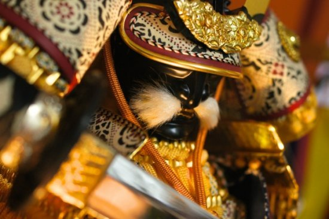

| 10人の戦国武将 逸話・エピソード集 | |
| ヨシピロ | |
| (2018) | |
最近ではゲームに漫画に、様々な武将が登場します。有名どころから聞いたことのないマイナーな武将まで出てくることがありますね。
今まで聞いたことの無いような武将が突然脚光を浴びることも珍しくなくなりました。
本書では有名/無名含めた、10名の武将の逸話・エピソードを集めました。
鬼神のような活躍をした逸話や時には人間臭い一面を見せたりと、様々な話を載せております。
本書を読んで頂くことで、戦国武将により親しみを感じて頂ければと思います。
歴史ブーム昨今、戦国時代の有名な武将達は人気を集め、様々な媒体で描かれることが多く、その中で織田信長、豊臣秀吉、徳川家康の戦国三英傑をはじめ、武田信玄、上杉謙信やその下の世代である真田信繁、伊達正宗などが特に人気を集めています。
しかしそんな人気武将に負けず劣らない、実は凄いローカル武将はたくさん存在し、ここでご紹介する『三浦義意（みうらよしおき）』をその一人です。
ここではそんなローカル武将『三浦義意』の逸話や武勇をご紹介します。
三浦義意は、明応5年（1496年）～永正13年（1516年）まで生きた、戦国時代初期の武将であり、相模三浦氏最後の当主とされています。
また義意は「八十五人力の勇士」の異名を持っていたとされ、戦国最強の武将であったという意見もあります。
しかしそんな豪傑であった義意も最期は、北条氏によって領土を奪われて、父と共に籠城した三崎城しましたが、ついに三崎城は陥落し、義意は敵中に突撃して討ち取られたと言われています。
金砕棒を振り回し敵をなぎ倒す姿はまさに鬼
義意を示す資料には、金砕棒と呼ばれる長い棒状の武器を持った姿の義意の絵が、度々登場します。
義意はこの金砕棒を手に戦ったとされており、横に払うと一振りで5、10人と押し潰し、討たれたものは500余名であったと言われており、その豪胆さは「北条五代記」にも記されています。
金砕棒を片手に敵をなぎ倒すその姿は、まさに義意を鬼と言わしめる所以であったのでしょう。
敵も恐れた鬼神ぶり
三浦義意を語るうえで外せないのが『新井城の戦い』と言われています。
史実では「戦国時代初期に三浦義同が伊勢盛時（北条早雲）に城を囲まれ、3年にわたる篭城戦を繰り広げたが、ついに陥落して相模三浦氏は滅亡した」とありこれが新井城の戦いとなるのですが、この戦いでは義意があまりにも鬼神過ぎて、義意討って出ると敵が恐れて襲ってこなかったとされてます。
それもそのはずで自分よりも大きい2ｍ程の金棒を振り回して敵をなぎ倒すものですから、敵が恐れを抱くのも当たり前で、「義意を打ち取れば褒美をやるぞ」と言われても、兵たちはただ茫然とするしかなかったそうです。
実際に三浦義意に関する資料は、時代を彩った有名武将に比べ確かに少ないですが、これら豪胆な逸話が遺されているように、戦国の世の中をその豪胆さを武器に、三浦義意は最期まで懸命に生き抜いたと言えるでしょう。
可児吉長（可児才蔵）は、知名度自体はあまりなく、マイナーな武将という印象の人も多いかもしれません。
しかし、戦国時代における武将では、現代人の我々も手本にすべき人物であるという評価もできます。なぜならば、可児吉長のすごいところは、位の高い人物であっても、その人物に従えることが損と判断すればすぐに切り捨てる決断力と有能さを持っていたからです。
可児吉長のエピソードとして現代人も参考にしたい部分があるとすれば、それは１５８４年に起きた小牧長久手の戦いです。
戦っていたのは羽柴英次と徳川家康ですが、このとき可児吉長は羽柴軍についていました。
そして、羽柴軍は戦に勝つための奇襲作戦を考えていたのですが、なんとその奇襲作戦が戦の前に相手の徳川軍に漏れてしまうという事態が起きるのです。
そのことを知った可児吉長は大将である秀次に退却した方が良いとアドバイスをするのですが、秀次はそれを聞き入れないのです。何度言っても聞く耳を持たない秀次を目の前にして、可児吉長は呆れかえり、現代語に訳すと「くそくらえ」という捨てセリフを残し、秀次はその場から去ります。
可児吉長からしてみれば、明らかに不利な状況なのだから、１度退却をしてもう１度戦略を立て直すところから始めないと負けるに決まっているのだが、そんなことすらも分からないのか？という気持ちだったのでしょう。
つまり、羽柴英次は自軍の大将という立場の人間で、明らかに自分よりも地位が高いのですが、無能と判断したらその場で切り捨てるという、自分にとって何が得か？という判断力に長けた一面があったのです。
その後、小牧長久手の戦いは秀次軍が敗れ、可児吉長の指摘の通りとなってしまったのですが、敗走の最中で秀次は自分のもとを去った可児吉長と出会います。しかし、そのときに可児吉長は一切手を貸すことなく、秀次を見捨てていったとも言われています。
このときの可児吉長の気持ちは、「自分の言うことを聞かないからこういうことになるんだ」という気持ちだったのではないでしょうか。
可児吉長はその後どうなったのかというと、関ケ原の戦いで功績を挙げた福島正則の家臣となります。可児吉長としては、このときようやく有能な上司が見つかったという思いだったのではないでしょうか。
現代でも上司に不満を言いたいが言えない、会社を辞めたいが辞められないというジレンマは存在していますが、考え方が間違っている上司には仕えないというポリシーを持った可児吉長が仮に今でも生きて会社で働いていたら、さっさと辞めて転職を繰り返して、自分のいるべき場所を見つけるということをしていたのでしょう。
そういった現代人にとって見本となるべき部分もあるのが可児吉長であり、彼の生き方に共感をする人も多くいるのではないでしょうか？戦国時代において、戦の才能を持っていた可児吉長は非常に魅力的な部分を持っていたと評価できると思うのです。
森長可は安土桃山時代、織田家に仕えた戦国武将です。
森家といえば織田信長に寵愛された美少年・蘭丸が有名ですが、その兄の長可は腕っぷしの強さと気性の荒さから「鬼武蔵」として恐れられた人物です。
個性派ぞろいの織田家の家臣たちに引けを取らないほどの濃いキャラクターで様々な逸話を残しています。
永禄元年、長可は織田信長に仕えた森可成の次男として美濃に生まれました。父が戦死すると、長可は13歳の若さで家督を継ぎます。信長の嫡男、信忠の家臣となった長可は、15歳の初陣で単騎で敵に討ち入り、27人を打ち取るという衝撃的なデビューを果たします。
その後も、落とす前の城を「落とした」と報告したり、味方を出し抜いて敵陣に乗り込んだりと破天荒を絵に描いたような活躍を見せます。
最も有名なエピソードは甲州征伐の際の高遠城攻めでしょう。長可の部隊は独断で本隊から離れ高遠城へ侵攻。城の屋根に開け、その穴から鉄砲を差し入れて城内の人間を蜂の巣にしたのです。一方的な攻撃に城内は大混乱、それに乗じた長可は城内に攻め込み、さらに大量の首を上たのでした。その苛烈な戦いぶりに長可の下半身は大量の返り血で染まったため、信忠に怪我をしたのかと心配されたほどでした。
この件ではさすがの信長も長可に注意の手紙を出したと言われています。しかし信長は長可の破天荒ぶりを好ましく思っていたようで、度重なる命令違反にも拘わらず注意のみで済んでいたようです。
「鬼武蔵」という異名も信長が彼につけたものです。
あるとき、信長が渡ることを禁じていた橋がありましたが、長可は橋守の静止も聞かずに押し通ったばかりか、橋守に腹を立てて首をはねてしまいます。
その出来事は信長の耳に入り、長可は城へ呼ばれました。誰もが重い罰を与えられると息を呑みましたが、信長は長可を許したばかりか「橋の上で人殺しをするとは武蔵坊弁慶のようだ」と長可に「鬼武蔵」というあだ名を与えたのでした。
そして天正10年、本能寺の変で信長を失った長可は仇討ちのために領地から明智光秀征伐へ向かおうとします。しかし、以前から不満を募らせていた領地の国人衆が長可に人質を返せと要求してきます。この緊急時を知って謀反を起こしてきた国人たちに長可は激怒しました。なんと人質たちを盾にして領地を脱出したうえ、人質を返すどころか皆殺しにしてしまいました。血も涙もない長可の仕打ちは国人たちは震えあがらせたのでした。
その後も信濃を中心に領土を拡大していく長可でしたが、天正12年。実質的に秀吉vs家康の信長の後継者争いとなった小牧・長久手の戦いが起こります。長可は秀吉側について戦いますが、敵に囲まれ窮地に立たされました。決死の覚悟で鎧の上に白装束を着て出陣する長可でしたが、家康配下の井伊直政の軍と激戦を繰り広げた末、眉間を撃ち抜かれて死亡しました。享年27歳でした。
信長の死後の実力者の一人であった長可の死に、敵の家康はもちろん味方の秀吉でさえ喜んだとも言われています。
苛烈な性格で恐れられた長可でしたが、その遺言は意外にも「娘は武士ではなく医者のような人間に嫁がせたい」というものでした。
他にも家臣の各務元正が三木城攻めで負傷した際には毎日お見舞いに訪れたり、本能寺の変で蘭丸たち弟を亡くした母を慰め一緒に涙を流したという逸話が残っており、「鬼武蔵」の優しい一面を伺うことができます。
那須与一は平安時代の末期の武将として有名です。
与一は那須氏の二代目の当主と伝えられています。
『吾妻鏡』などには那須与一の名はないため、与一のエピソードは後の軍記物『平家物語』、『源平盛衰記』によって伝えらたことが大きいと思われます。
治承・寿永の乱で、兄十郎為隆といっしょに源頼朝方に味方をして、頼朝の弟義経軍にの軍に属したとされます。元暦2年（1185年）の屋島の戦いで、敵方の船に掲げられた扇の的を弓矢で射る功を挙げた話は有名ですね。
与一が十一男にもかかわらず那須氏の家督を継いだのは、9人の兄達が皆平氏に味方してしまったためです。後に、与一は逃亡していた兄達を助け、領土を与えて、下野における那須氏の大元を作ったと考えられています。
また、与一が源氏に味方したのは、那須岳で弓の練習をしていた時に、那須温泉神社に必勝祈願に来た義経と知り合い、資隆が兄の十郎為隆と与一を源氏の味方に付く約束をしたためと言われています。
幼き頃より弓矢が達者で、居並ぶ兄弟の前でその腕前を示し父資隆を驚かせたといいます。
弓の腕を上げようと修行を積み過ぎた為、左右で腕の長さが変わってしまったとうエピソードは弓の名手らしいものですね。
子孫についてはないとされますが、歴史学者の那須義定などが主張する説（越後那須氏）もあり、梶原氏と争いを起こしたため出奔して越後国の五十嵐家に世話になって後、一男一女を儲けたとも伝わります。また、常陸、出羽、阿波にも与一の末裔を名乗る一族がいたという言い伝えがあります。
また扇の的を射た功績で得たと伝えられている備中荏原荘という荘園が存在しています。これが史実かどうかは不明ですが、鎌倉時代中盤に、那須氏の一族がこの地域を支配していたことを示す記録が残っています。また、与一に関する伝承には備中那須氏を初めとする、西国の一派があり、下野那須氏の間ではなくとも、南北朝期時点では与一の伝説については知られていなかった可能性もあるようです。
頼朝の死後に赦免されて那須に戻った後に出家して浄土宗に帰依し、源平合戦の死者を弔う旅を30年余り続けた後、貞永元年（1232年）に中風のため摂津国で没したという。
源為朝は源氏と平氏が争っていた源平時代の武将です。苗字からわかる通り、源一族の武将でした。
父親は源為義で母親は遊女だったと伝えられています。
為朝は体格の良い武将だったことで有名で、身長は七尺(現代で言う2メートル超)で、得物である大弓を弾き続けた結果、左腕が右腕よりも12センチ長いと言われています。並みの武将から見れば風貌だけで化け物のような存在だったことでしょう。
しかし体格もさることながら、特筆すべきはその気性の荒さ。傍若無人で自分勝手であり、親戚である源一族の武将に対しても協調性はゼロでした。わずか13歳の頃に実の父親から勘当されて九州の鎮西まで追われたことからも、その凶暴さと周囲の恐れっぷりが想像できます。
鎮西に追われてからの歩み
親から勘当されて大人しくなるかと思いきや、為朝は鎮西を拠点にして周囲の豪族たちに次々と戦いを挑んでいきます。しかも恐ろしいことに連戦連勝していき、十代半ばという若さで九州中で最大勢力の武将として知られるようになりました。
合戦、城攻め、夜戦を繰り返していく蛮行に朝廷は為朝を呼び出しますが、為朝は知らぬ存ぜぬを決め込みました。
そして父親である為義が朝廷から役職を解雇されてはじめて渋々上洛しました。
どこにいても面倒ごとを運んで来る息子為朝に、為義は悩まされていたことでしょう。
保元の乱でのエピソード
当時の上皇と天皇との争いが保元の乱となり、為朝もその戦火に巻き込まれていきます。
既に名実ともに恐ろしいほど強い武将であった為朝はこの戦いで驚くようなエピソードを残しています。
使用していた武器についてですが、5人の男が力を合わせてようやく引けるレベルの大弓を一人で使いこなしていました。
その威力たるやとんでもないもので、保元の乱中に平氏軍に対して射た弓が一人を貫通して別の人間に突き刺さっています。貫通弾です。
また威力はもちろん、命中率も相当なもので、敵将の兜についている飾りの星だけを射落としたというエピソードまであります。
残念ながら為朝の味方する上皇軍はこの戦いに敗れ、為朝も逃亡生活後に捕らえられてしまいました。
島流しと為朝の死
為朝は捕らえられてしまったものの、2度と弓を引けないよう左腕の腱を切られ、その後伊豆大島に島流しという寛大な罰のみで命を救われます。為朝はこれに懲りて大人しくなったのでしょうか。
結論から言いますと、まったくそのようなことはありませんでした。
左腕の傷が治ってからすぐ、伊豆大島の代官に婿入りして伊豆諸島に巨大な勢力を築き上げます。その頃にはすでに3人ががりでようやく引けるレベルの大弓を使いこなすまでに回復し、再び大暴れをするのでした。
しかし、恩情をかけて命だけは助けてやったものの再び大暴れを始めた為朝に、流石の朝廷ももう容赦しません。為朝の討伐令を出し、次こそ為朝の命をとりに行きます。
流石の為朝も自分の命を諦め、せめてもの抵抗にと討伐軍の船を弓矢一本で沈め、腹を切って死にます。
その他の伝承
剛健なあばれ者として知られていた為朝は、その死後に多くの伝承や生存説が流れました。
沖縄で生き延びて琉球王になったという話は特に有名です。
死後にもそういったエピソードが流れたことから、実は庶民からは好かれていた人物だったことがうかがえます。
戦国時代を生きた歴史上の人物は映画やドラマ、小説、ゲーム等でも取り上げられることが多く、中でも戦国三英傑である、織田信長、豊臣秀吉、徳川家康を中心として取り上げられています。
しかしそんなメジャーな戦国武将以外にも、あまり知られていないけど、その時代に功績を残した戦国武将は数多く存在します。
その中で今回ご紹介するのは、戦国時代の荒武者「戸沢盛安（とざわ もりやす）」です。
戸沢盛安は、安土桃山時代の出羽角館の大名であり、戸沢氏18代当主でもあります。
病弱な兄である戸沢盛重にかわって、13歳という若さで家督を相続し、角館城主となったとされ、奥州の武家である南部氏から独立をするため勢力拡大に力を注ぎ、最終的に小田原にて豊臣秀吉と謁見し、北浦郡4万4,000石の所領を安堵されまれした。
しかしその後、戸沢盛安は享年25歳という若さでこの世を去ります。
ここではそんな短い人生を懸命に生きた戸沢盛安のエピソードをご紹介します。
迫力のある異名を持ったとされる戸沢盛安
智勇に優れた戸沢盛安には幾つか異名があり、「荒武者」「鬼九郎」「夜叉九郎」と呼ばれ、周辺の大名に恐れられたとされます。
その戦闘スタイルはまさに「荒武者」
戸沢盛安の戦のスタイルとしては、まさに荒武者と呼ぶに相応しかったとされます。
総大将であるにも関わらず、戦では常に陣頭に立って、単騎で敵勢の中に突っ込む姿はまさに荒武者そのものであったとされています。
しかしその半面、部下を非常に大切にしたとされており、部下だけでなく捕らえた捕虜の命を奪うことなく逃がしたりなど、慈悲深い一面も持ち合わせていたとされます。
戸沢盛安を語るにあたり外せないのが、小田原征伐参陣エピソード
盛安が羽前の港の酒田に到着したところで旅費が尽きてしまったために、加賀屋与助から七両を借りたというのは有名なエピソードです。
その他にも、盛安が金谷に居た時に、秀吉は既に島田にいたため、それを知った盛安慌てて引き返したのですが、しかし運悪く途中の大井川が大雨で増水し、渡れないという状況に遭ってしまいます。
状況が状況なだけに、盛安の家臣は、「渡るのは明日にしましょう」と言うのですが、盛安は「関白殿下に忠義を立て遠国から駆けつけてきたのに、たかが増水等で遅延できない」 と言って提灯を掲げて根性で泳いで渡ったとされています。
そしてそのまま体が濡れたまま秀吉と対面し、盛安は「羽州角館の住人戸沢治部大輔参陣仕る」と言い、秀吉はその行動を褒めて太刀を与えたそうです。
このエピソードからでも盛安の豪胆さと忠義心の深さが伺えます。
25歳という若さでこの世を去った戸沢盛安ですが、これらのようなエピソード等でもわかるように、戦国という乱世を懸命に生きた戦国武将の一人であった言えます。

細川幽斎は、細川藤孝が晩年に名乗った雅号です。
幽斎が生まれたのは、足利幕府の管領職を名乗ることができる名門、細川家の血筋でした。
幽斎は幼い頃から英邁な才能を見せ、和歌や茶の湯などの文化教養から、槍刀といった武芸に至るまで、よく励んだといわれます。
しかし主家筋である足利将軍家は没落し、幽斎が３０歳くらいのころ、１３代将軍義輝が松永久秀らに暗殺されてしまいます。幽斎らは、義輝の弟でのちの将軍足利義昭を助けながら、足利将軍家を守るため、各国を流浪するはめになってしまいます。
幕府をもり立ててくれる後ろ盾となる有力大名を捜し歩くうち、その頃出会ったのが尾張の織田信長でした。
信長は幽斎と同じくらいの年頃の上、文化を解し先見の明もあるなど、相通じる部分が多くありました。幽斎は信長に心を引かれ、その力に頼ろうとします。
そのうち織田家に付き従う有能な武将の一人となるわけですが、のちのち問題になったのは、このころ織田家でも抜きんでた才能がある家臣、明智光秀と親戚関係なったことでした。
光秀とは足利家に仕えていたころから親しい間柄でしたが、信長の周旋もあり、光秀の娘の玉と、自分の嫡男忠興とを結婚させたことで、両家の絆はさらに深まりました。
しかし、本能寺の変で信長が光秀に殺され、光秀から助力を頼まれると、幽斎は突然剃髪して隠居し、家督を忠興に譲ります。
世情を慎重に分析した幽斎は、光秀に勝ち目がないことを悟り、見切ったわけです。
幽斎の深い識見、才能は豊臣秀吉にも重用され、細川家は当主忠興のもとで安泰となります。
ところが、やはり戦国の世。平穏無事な日々は長くは続きません。徳川家康が天下を狙い、国を二分する関ケ原の戦いが勃発してしまいます。
幽斎は秀吉が死去した後から、その才を発揮してすでに国内の形勢を見切っており、関ケ原では東軍に与していました。
そのため大阪から近い幽斎の所領。丹後に、西軍の大軍が攻めてきたのです！
西軍１万５０００に対し、城を守る手勢は５００。圧倒的に不利なのですが、なんと幽斎は見事な采配で二カ月近くも持ちこたえます。この状況に一番焦ったのが、なぜか朝廷でした。というのも、幽斎は平安時代から朝廷や公家社会に伝わる和歌の技術を一子相伝で受け継ぐ、「古今伝授」を、当時の国内で唯一許された、朝廷にとっての最重要人物だったからです！
普通は公家の間で伝授していくものなのですが、あまりの幽斎の豊かな教養と才能に、その役目を任されていたのです。「幽斎が殺されてはまずい」と朝廷は、何と天皇による勅命を出し、両軍に講話を命じます。
ようやく西軍が兵を引いたときには、関ケ原では東軍が大勝。幽斎は攻城戦を長引かせることで、西軍の力をそぐことにも成功したのです。
すべては幽斎の策略だったともいわれるこの戦い。幽斎という人物のすごさをまざまざ示すエピソードとして語り疲れています。
伝説的要素の多い強力無双の豪傑知る人ぞ知る『小島弥太郎』
歴史ブームの昨今メジャーどころである、織田信長や豊臣秀吉、徳川家康ら戦国三英傑や、武田信玄、上杉謙信など時代に彩りを与えた戦国武将は多くの人に知られていますが、
それら有名武将を影で支えた者たちはあまり知られていないと思います。
ここでご紹介する小島弥太郎もその一人です。
ここではそんなあまり世間に知られていない豪傑『小島弥太郎』についての情報や逸話をご紹介します。
上杉謙信の側近だった
小島弥太郎は上杉氏の家臣であり、あの有名な上杉謙信の幼少期から側近として仕えていました。
しかし弥太郎に関しての記述は、上杉氏の軍役帳や名簿に記載されておらず、実在したかどうかを疑われており、伝説的な存在とも考えられます。
幼少期からの謙信の側近であれば何らかの記述が残されていないとおかしいですから、そういった面でも後術に紹介する逸話につながるのかもしれません。
強力無双の豪傑として『鬼小島』と恐れられた
伝説的要素の濃い弥太郎には幾つもの逸話が存在し、『鬼小島』という異名もその一つです。
その強力な無双さゆえの豪傑さで鬼小島と恐れられたと言われていますが、前述でもあったように、上杉氏の軍役帳や名簿に弥太郎の名前が残っていないこと、また当時の上杉家中には小島姓を名乗る人物が多く存在するため、そこから創作したとする説もあり、本当のところは定かではありません。
存在が不確定ゆえの小島弥太郎の伝説的逸話
上記の他にも、弥太郎に関する伝説は多く、第13代征夷大将軍である足利義輝の飼う大猿を懲らしめたりや、甲斐武田氏に使者した際に襲い掛かってきた猛犬を打ち負かしたなどの豪胆な逸話や、他にも山県昌景が弥太郎との一騎討ちの最中、武田信玄の嫡男である義信が窮地に陥るのを見て、弥太郎に助けを願い出たところ、弥太郎が快諾したことに恩義を受け、川中島の戦いの際に弥太郎の事を「花も実もある勇士」と賞賛したなどの、戦に関する逸話も残されています。
そんな伝説要素の強い弥太郎でしたが、長野県飯山市の英岩寺に弥太郎の墓とされるものがあり、また『鬼小島弥太郎戦死の地』というのが、現在の新潟県長岡市栃尾大野町の天神山にあります。
その伝説的要素の多さから、実在したか定かではない小島弥太郎ですが、その透明感のある存在が魅力的でもあり、逸話も生みやすい存在であると考えられ、作家などの書き手や、またそれらを感じる大衆にとっても、今後も男臭い格好いい豪傑であり続けることでしょう。
小説やテレビだけでなく、最近ではアニメやゲームの題材によく登場する『足利義輝』ですが、実際にはどのような人物だったのか、どのような逸話があるのか、知らない人もいると思います。
ここではそんな室町幕府大13代征夷大将軍『足利義輝』の基本的な情報や逸話等をご紹介します。
室町幕府大13代征夷大将軍
冒頭でもありましたが足利義輝は天文15年（1546年）12月20日、従四位下征夷大将軍となり、家臣である松永久秀の傀儡でもありましたが、義輝は幕府権力と将軍権威の復活を目指し、諸国の戦国大名との修好に尽力し、大名同士の抗争の調停を頻繁に行った将軍でもありました。
非業の最期を遂げた
足利義輝は永禄8年（1565年）5月19日の永禄の変にて享年29歳という若さで非業の最期を遂げます。
将軍親政を試みた義輝でしたが、傀儡としての将軍を擁立しようとする松永久秀と三好三人衆にとっては、将軍家の直接統治に固執する義輝は邪魔な存在でもありました。
そして永禄8年（1565年）5月19日、三好三人衆は清水寺参詣を名目に集めた約1万の軍勢を率い二条御所に押し寄せ、御所に侵入することになりこれが永禄の変となります。
攻め入れられた義輝は、自身も薙刀振りかざし最後まで戦いましたが、最後は地面に伏せたところを一斉に襲われたとされますが、この義輝の最後には様々な説があり、討死したとも自害したとも言われています。
剣豪将軍
前述の非業の最期でもあったように義輝は剣豪としても有名です。
最も知られた逸話としては、戦国時代の剣豪『塚原卜伝』から指導を受けた直弟子の一人であり、その奥義である『一之太刀』を伝授されたという説もあります。
このことからも鎌倉時代から室町時代までに登場した歴代征夷大将軍の中でも、最も武術の優れた人物であると言われています。
またそれを裏付ける資料として、宣教師ルイス・フロイスによる『フロイス日本史』では「義輝は自ら薙刀を振るって戦い、人々はその技量の見事さにとても驚いた。その後はより敵に接近するために薙刀を投げ捨て、刀を抜いて戦った。その奮戦ぶりはさながら勝利を目前にしている者にも劣らなかった」と記されており、そのフロイス本人も、義輝を「とても武勇すぐれて、勇気ある人だった」と評しています。
アニメやゲーム等で度々義輝が登場するのも、剣豪将軍であった背景もあるのだと思います。
義輝は乱世であった戦国時代の将軍として懸命に生きた将軍であったと言えます。
実際には傀儡将軍であったかもしれませんが、その最期でもわかるように、命が尽きるまで傀儡であることに抵抗したのだと解釈したいです。
徳川三傑の豪傑『本多忠勝（ほんだただかつ）』
最近では大河にも登場した本多忠勝ですが、ドラマでは無骨な武人として描かれていました。
しかし実際のところはどうだったのか気になるところでもあります。
ここではそんな無骨な武人本多忠勝についての逸話などをご紹介します。
本多忠勝は、戦国時代から江戸時代前期にかけての武将であり大名でもあります。
一般的には徳川氏の家臣として有名ですが、上総大多喜藩初代藩主、伊勢桑名藩初代藩主を努め、忠勝系本多家宗家初代でもあります。
またこれも多くは知られていないですが、本姓は藤原氏を名乗っていたそうです。
慶長15年（1610年）享年63歳でこの世を去り、生前は「侍は首取らずとも不手柄なりとも、事の難に臨みて退かず。主君と枕を並べて討死を遂げ、忠節を守るを指して侍という（以下省略）」と言葉遺したそうです。
豪傑と呼ぶに相応しい派手な装備品
本多忠勝は槍の使い手としても有名であり、愛槍である『蜻蛉切』には逸話があり、刃長43.8cmの笹穂型の大身槍の穂先に止まったトンボが真っ二つになったことから、この『蜻蛉切』という名が付いた逸話が存在します。
『蜻蛉切』の長さ約6mだったとされており、当時の従来の槍の長さは4.5ｍでした、このことからも本多忠勝が扱う『蜻蛉切』は迫力があり派手であったと考えられ、まさに豪傑と呼ぶに相応しい武人であったと言えます。
徳川四天王としての数多くの武勇
本多忠勝は徳川四天王、徳川十六神将、徳川三傑に数えられ、それに見合った数多くの武勇が存在します。
例えば、生涯参加した合戦は大小合わせて57回に及んだとされ、そのいずれの戦いにおいてもかすり傷一つ負わなかったと伝えられていたり、そんな忠勝の名采配ぶりを見た配下は、「忠勝の指揮で戦うと、背中に盾を背負っているようなものだ」と称えられたりと、こと戦に関しての武勇は華々しいものばかりだったと言われています。
その他にも、織田信長は「花も実も兼ね備えた武将である」と称え、豊臣秀吉には「日本第一、古今独歩の勇士」と称され、関ヶ原の戦いでは敵方であった福島正則に武勇を褒め称えられたとされています。
しかし当の本多忠勝は自信を褒めた福島正則に対して「采配が良かったのではない、敵が弱すぎたのだ」と答えるなど、ふてぶてしさの中にも謙虚さを感じる武将であったと言えます。
しかしそんな本多忠勝ですが、関ヶ原において西軍が敗戦した際、それに与した真田昌幸、信繁（幸村）親子の助命を、娘婿である真田信之と共に家康に嘆願したりなど、慈悲深い面も持ち合わせていました。
絵に書いたような無骨な武人であった本多忠勝は、慈悲深さも兼ね備えた、魅力のある戦国武将であり、今後も多くの媒体で無骨な豪傑として描かれることでしょう。
戦国武将の様々な逸話を読んでみて如何でしたでしょうか。
中には信じられないような話もあったかと思います。
本書を読んで頂き、少しで楽しんでいただけたなら幸いです。